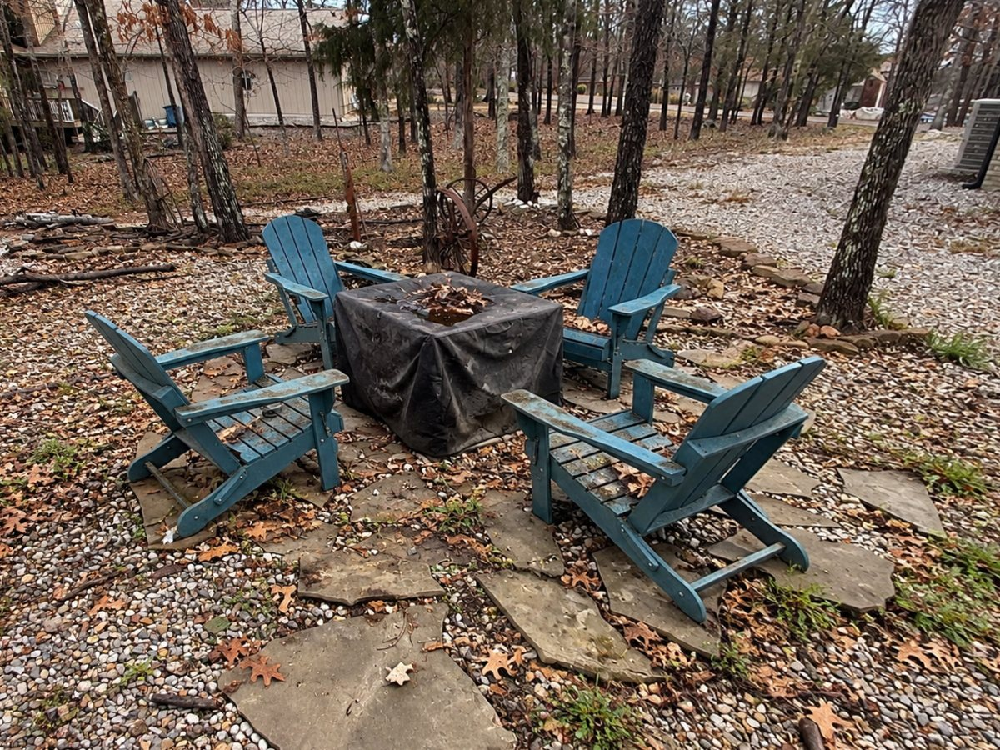
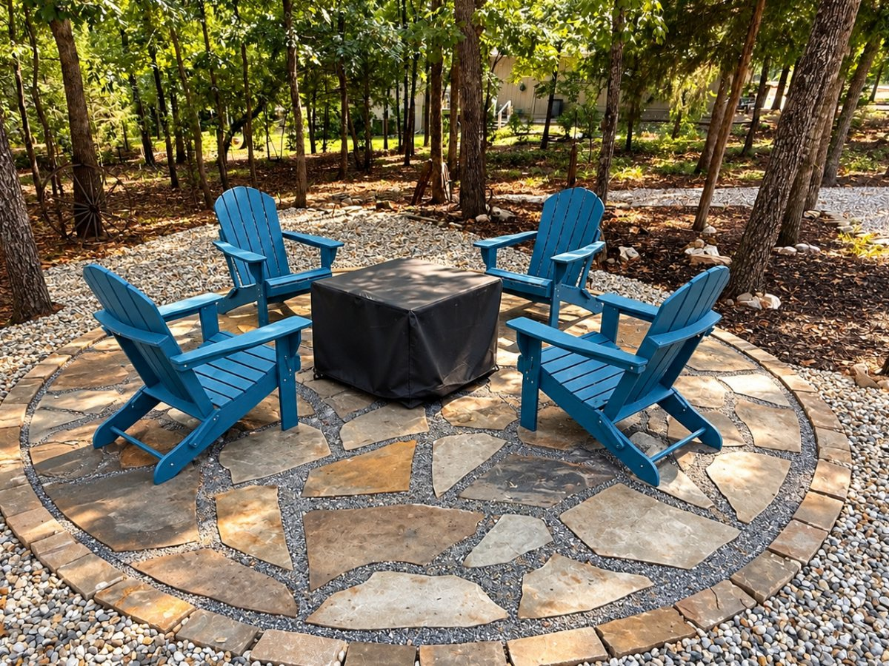

Our own work
Photos from real We Care jobs



Fire Pits · Hot Springs Village, Arkansas
A fire pit is the reason people go back outside in October. We build the pit and the patio around it as one piece, so the chairs sit level and the stone looks like it has always been there.
★★★★★ 5.0 from 17 Google reviews · Family-owned · Landscaping since 1998
Most fire pits fail at the ground, not the fire. Loose flagstones sink, gravel migrates, and the chairs start to rock. We dig out, build a compacted base, and set fitted flagstone or pavers so the seating circle stays flat for years.
Village yards are wooded and rarely flat. We place a fire pit where the slope, the trees and the view let it work: clear of low limbs, out of the drainage path, and close enough to the house that you will use it on a weeknight.
Our own work


"The fire pit area looks so inviting and fits right in with the landscape. Also, I love the way you pruned our Japanese maple. It is so pretty!"
Common questions
Yes. We build stone fire pits and the patios around them in Hot Springs Village, Hot Springs and the surrounding area.
Either. A wood pit is simpler. A gas fire feature needs a gas line run by a licensed installer, and we build the stonework around it.
Many exterior projects in the Village need a permit from the POA before work starts. Ask the POA's permitting office what your project needs. We can give you the drawing, materials and measurements they ask for.
Call or text, Monday to Friday 8am to 3pm. After hours, leave a message and Derrick calls you back.
More: Hot Springs Village · Stone Patios · Retaining Walls · Landscape Design · Mountain Pine · Home